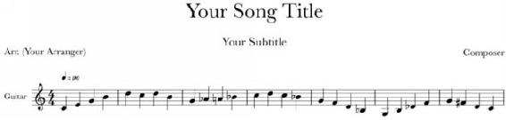

Figure 1.1. Refer to this figure to identify the parts of the staff
A sheet of music is at the same time more and less expressive than a page from a book: less expressive because there are fewer variations, fewer fine-grained distinctions and names and syntactic arrangements that are possible on a sheet of music (using, at least, the standard notation practices); and more expressive because a sheet of music communicates an array of information with extraordinary speed.
Each element of a sheet – from the title to the staff itself – is designed to communicate something, and sometimes, as is the case with a particular note on the staff, they are designed to communicate more than one thing at once (pitch as well as length, for instance). Taken in the first case as units unto themselves, each of these elements is important and worthy of varying degrees of attention. In time, it is possible to learn to process this information very quickly in aggregate, but the way to get there is to begin with them in isolation, wrapping your head around each of the elements of the staff and of the sheet.
So let’s look at each element separately.